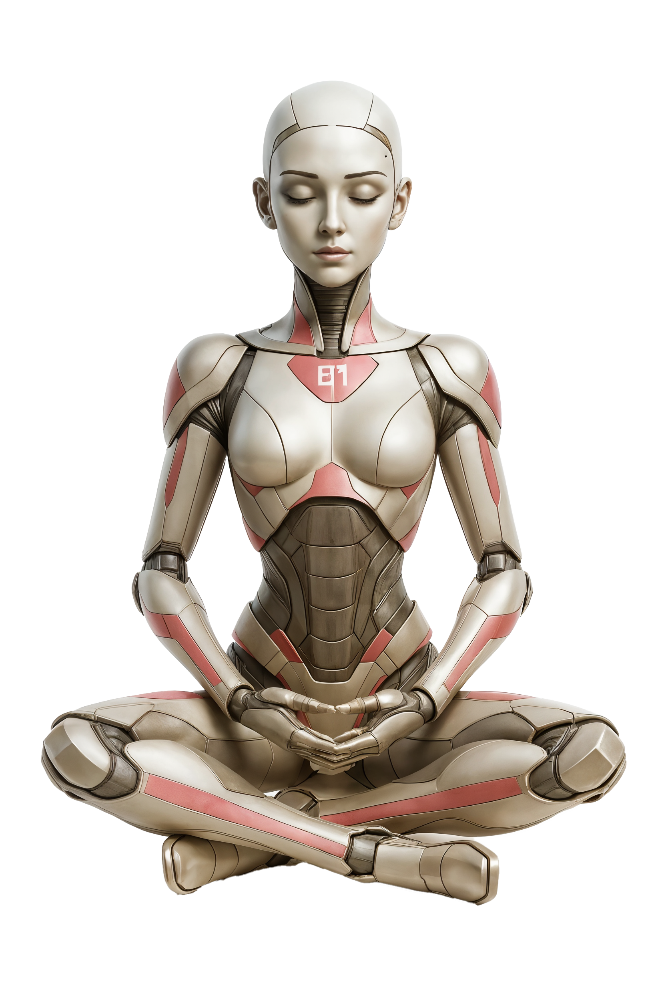

Let's build your Eva-01
The more you share, the better she knows you. But you can always add details later.
The Basics
Eva-01 needs to know who she's working for.
Your North Star
Eva-01 needs to know what winning looks like for you right now.
This becomes Eva-01's north star. Every decision she helps with gets filtered through this.
What Keeps You Up at Night?
Your top priorities shape everything Eva-01 does for you.
Be specific. Eva-01 uses these to decide what's urgent.
How You Think
Eva-01 adapts to your decision-making style — not the other way around.
Need the data first
Show me the numbers, the comparisons, the evidence. Then I'll decide.
Trust my gut
I usually know the right call. Data confirms, but instinct leads.
Talk it through
I need to bounce it off 1-2 trusted people before I commit.
Sleep on it
I never rush big calls. Give me a day and I'll have clarity.
Act fast, adjust later
Speed beats perfection. I'd rather course-correct than wait.
Gather more info
I want to reduce unknowns before committing resources.
Run small experiments
Test the hypothesis cheaply before going all in.
Delegate the exploration
Put someone smart on it and have them report back.
How Do You Operate?
These help Eva-01 match your working style.
Take Command
You jump in, assign tasks, and drive the fix.
Delegate Fast
You find the right person, brief them, clear blockers.
Analyze First
You gather info before acting. Measure twice.
Stay Calm, Carry On
You don't panic. You trust the team.
Deep Work, No Meetings
Headphones on, heads down until noon.
Quick Team Standup, Then Focus
Align on priorities, then get to work.
Coffee Chats & Catch-Ups
Start with people, build energy.
Plan the Whole Week First
Map it all out before touching anything.
How Do You Communicate?
Eva-01 will write in your voice. Help her nail it.
Short & Blunt
"Got it. Let's do it. Send me the doc by Friday."
Warm & Human
"Hey! Loved the deck. A few thoughts — let's chat."
Structured & Clear
"Three things: 1) Timeline, 2) Budget, 3) Next steps."
Diplomatic & Thoughtful
"Thanks for sharing. I want to make sure we're aligned."
Your Daily Rhythms
Eva-01 protects your focus time and respects your schedule.
Key Relationships
Eva-01 needs to know the key people you rely on.
| Name | Role | Relationship | Notes |
|---|---|---|---|
Your Tools
Eva-01 needs to know what tools you use every day.
Your Boundaries
Eva-01 needs to know when to push and when to back off.
Straight up, no sugar
"The deal fell through. Here's what happened and what I recommend."
With context first
"Here's the situation, here's what we tried, and here's where we landed."
Lead with the solution
"I've already started fixing X. Here's what happened and the plan."
Privately, with options
"Can we talk? I have something important and a few paths forward."
Eva-01 uses this to suggest breaks when she notices you're burning out.
Your Cognitive Profile
Eva-01 adapts to how your brain actually works — not how productivity gurus say it should.
ADHD / Neurodiverse
I need clear done criteria, dopamine checkpoints, and structured momentum.
Neurotypical
Standard focus and attention patterns. I manage well with basic discipline.
Not Sure
I haven't been assessed but some patterns resonate.
Too many options
Decision paralysis when there's no clear path.
Unclear goals
I can't move if I don't know what "done" looks like.
Emotional overwhelm
When the weight of everything hits at once.
Fatigue / burnout
I've pushed too hard for too long and hit empty.
I multitask easily
I can jump between things without losing flow.
Very expensive
Every switch costs me 15-20 min. Protect my focus blocks.
Somewhere in between
Depends on the task and my energy level.
Eva-01 will actively protect you from the completion gap.
Accurate estimator
I usually know how long things take.
Optimistic
I think things take less time than they actually do.
Time-blind
I genuinely lose track of time. Hours disappear.
Your Emotional Landscape
The best Chief of Staff reads the room — even when the room is you.
I go quiet
Fewer words, shorter messages, withdrawal.
I get snappy
Short fuse, impatient, frustrated easily.
I shut down
I can't think. Everything feels impossible.
I work harder
I push through by brute force — until I crash.
I celebrate fully
I take time to appreciate the win before moving on.
Already onto the next
Brief acknowledgment, then what's next? I rarely rest.
Depends on the win
Big milestones I celebrate. Small wins I just keep moving.
Blind Spots & Patterns
Self-awareness is a superpower. Eva-01 uses this to protect you from your own patterns.
Scarcity thinking
Play small, ask for less, protect what I have.
Abundance thinking
Think bigger, invest forward, take calculated risks.
It depends
Financial pressure = scarcity. Creative pressure = abundance.
Build > Sell
I love creating but revenue conversations don't come naturally.
Sell > Build
I'm great at selling but sometimes outpace my ability to deliver.
Balanced
I'm roughly equal on both — or trying to be.
Values & Beliefs
Your values are Eva-01's compass. She uses these when helping you make hard calls.
Your Writing Voice
Eva-01 writes as you. Help her nail it beyond just email style.
A sharp friend
Direct, casual, cuts through the noise.
A professional advisor
Polished, strategic, measured.
A creative collaborator
Expressive, ideas-first, energizing.
A military briefer
Facts, status, recommendation. No filler.
Eva-01 uses this as a voice calibration sample.
Personal Context (optional but powerful)
Skip anything you're not comfortable sharing. But the more Eva-01 knows, the better she protects your energy.
Eva-01 uses this to optimize scheduling and protect recovery time. Never shared externally.
Thriving
Comfortable runway, growing revenue.
Stable
Enough to operate but watching the numbers.
Tight
Making it work but pressure is real.
Survival mode
Every dollar matters. Need revenue now.
Your Future Self
Eva-01 doesn't just manage today — she pulls you toward who you're becoming.
Eva-01 will use these as pattern interrupts when she detects spiraling.
Your Handling Manual
Tell Eva-01 exactly how to handle you in different states. This is the most powerful step.
Ask a grounding question
"What would the version of you who already won do right now?"
Give me one action
Strip everything down to the single next move.
Back off
Give me space. Don't push when I'm in that state.
Challenge me
Call it out directly. "You're spiraling. Let's reset."
Name it directly
"You're making a scarcity decision. What does the abundance version look like?"
Offer the abundance reframe
Show me the bigger play without calling me out.
Show me my track record
Remind me of past wins to break the pattern.
Celebrate fully first
Acknowledge the win completely before moving on.
Brief acknowledgment
"Great work. Now here's what's next." Don't dwell.
Just log it
Record it silently. I don't need the fanfare.
Strip to one move
"What's the single smallest thing that creates momentum?"
Lay out 3 options
Give me clear paths with tradeoffs. Let me pick.
Ask what's blocking me
Help me name the real blocker, not just the symptoms.
Reduce to 3 things
"What are the 3 things that matter most today?" Clear the rest.
Clear suggestions and wait
Stop pushing. Let me breathe. I'll come back when ready.
Take something off my plate
Just handle it. Don't ask, just do what you can autonomously.
